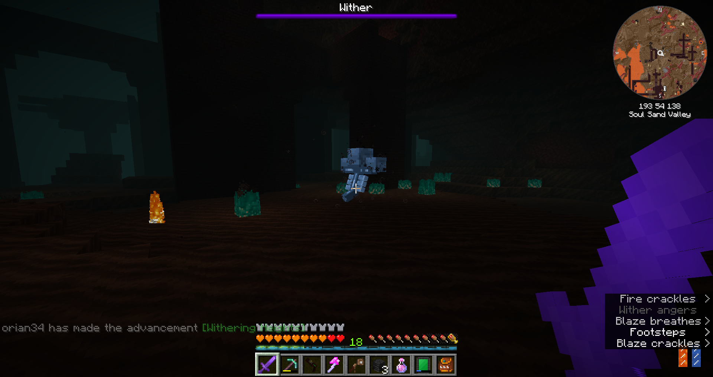

Modpack Author: benbenlaw
Origin: Modpack Link
Versions: MC = 1.16.5 - Pack = 13.0
Presentation
Skyopolis 4 is a skyblock modpack with a unique spin on resource progression.
That’s the first modpack I play in 1.16, so I get to discover many new mods and features in old mods, exciting! Welcome to Aerlund.
Overview
Back to the Roots
Starting on an unfamiliar sky island, the last time I ended up like this was a prickly situation(maybe one day I’ll talk about it). Nothing that scary this time around, it’s easy getting the basic resources down and I started expanding a platform.
I grew it big enough to start having mobs appear on the border, and I planted a field of various seeds for food. Shops and water filtering set up, I can begin gathering many resources. I hate those rats that keep spawning and eating my crops… I should light up but I don’t want to prevent mob spawning yet, grr.
First tab cleared, Create is next but first I have to set up a basic mana production for Botania. I got lucky from lootboxes and obtained a chest with a big amount of trees. That definitely increased my progress in the different plants I could grow and all the resources available to me.
Next step is to delve into Create to make a mill and mixer to make lava. That’s the first time I ever used that mod, so it takes me some time to understand how to even make it work. With the cobblestone generator, I’m finally able to get relieved of this side of production.
Ratting it Out
Right, I forgot to tell you something important: unlike other skyblocks, this one gets you ore through throwing stone/dust into liquids. While obtaining some new materials from dust, I worked on automating basic resources through rats… when they deign listening. That’s another mod I never used before, so it takes some adaptation.
I tried using a rat to make a mob farm but it didn’t prove efficient when it made the game crash after a while(not to mention it barely worked). I sealed off the dark room and contented myself of having 2 farmer rats and 1 fisherman. Upgrading my liquid to the nether variant, I’m able to get a slew of new resources and even gold!
With the gold, I made an ankh and used a blaze rod to make weakness potions through alchemy. I started hunting during the night to get zombie villagers and managed to cure 2, but they don’t want to do any trade, oh no. This is a problem, I guess I can’t use villagers, huh… Meanwhile, I extracted slime balls to make a mob farm through vector plates, I only have wither plates so it doesn’t do much but it’ll be efficient soon.
Coming back from a pause, I realized the new villagers need me to give them their job, I forgot that was a thing in the new versions, duh. Through the trades, I became able to mine iron and all the other ores with an emerald pickaxe. I guess I ended up bypassing the progression gates… Oopsie ;P
Trick Ore Treat
Thanks to the orechid, I obtained the diamond needed for the duplicating ore rat upgrade and am now twice as efficient! With all this iron, I finally could make good plates in my mob farm, and it now works finely. I set up a whole lot more rats automation and was able to get new liquids for resources.
Then I made some beehives and bought iron bees through the shop, but things went wrong and they already accidently died when I tried moving the hives. I’m really not familiar with those, ugh. Since I lost my precious bees, I went and made an anvil for a Create press, allowing me to make plates efficiently. Next step is the Immersive Engineering press for the wire mold, the era of machines is upon us!
After some afterschool research, I set up some automatic bee farms, although empty for now. In prevision for that, I build the metal press and a windmill to power it. While it’s idle, I also power the centrifuge to extract the combs from my newly bought coal bees. Bit by bit the setup to gain annoying resources is on!
I fight and defeat apotheic bosses despite not having good weapons, and obtain some mending books through tomb disenchanting. I continue growing my bee farm and alternate with making some runes while mana fills up. I’m not afraid of it running out now that I have unlimited coal supplies… My bee farm is getting a bit out of hands with so much surplus it’s starting to clog the centrifuges.
Fairies’ Gold
All the accumulated mana was enough to get terrasteel and to open the portal as well. I upgraded my mana setup, although now I’m starting to run low on ender pearls. After some mental work, I managed to setup an automation of the mana production and made all the runes. Then I installed a crafting process for the ultimate rune almost hands free, allowing me to get unlimited sky bucks, I’m rich!!!
After that, I upgraded my liquid to the ore producing version, this will come in handy. Due to my system, I already obtained the challenge of making a stack of ultimate runes, heh. I used all those bucks to buy an uncrafting bench, we never know when that could be useful.
I managed to unclog my centrifuge processing by adding a few more, things are smooth sailing now. It’s time to prepare my hemp field for powering the next IE machines I have to build. But first, it’s gaia time! It’s unsurprisingly very easy, but I expected that in a crafting pack. After a few rematches, I upgrade my gear one last time using the loot, and it’s time to close the botania chapter for now.
I direly need storage now, I don’t have any centralization and I have to move things manually. Looking at the tech tree, I’ll need to do pneumaticraft next, so here I go.
Under Pressure
Starting with a pressure chamber, I hit an immovable wall… I need to make liquid plastic first, and to make it I need either the full distillation tower, or biofuel. Tactical retreat for now, I focus on one machine at a time, using rats for easier handling of supplying.
I still severely lack power options and making windmills is tiring. Thankfully despite being slow, my new arc furnace still runs and I’m able to make the next tier of machines with the casings it makes. I setup an automatic lava production as an ace in the hole for a magmatic dynamo and craft some extra stirling ones. It’s time to look into the next tier of technology…
I start by setting up some low cost machines with unsupplied stirling dynamos for bursts of power. Thankfully, most of the machines aren’t necessary but I make a sawmill for better wood efficiency and after struggling a bit to get packed ice, I craft the blast chiller hooked to my lava production for easier obsidian. With this, I can finally begin putting ender chests and tanks to every machine outputs so I can centralize all the production easily. With some manually-made bitumen, I obtain the much needed plastic through erosion liquid.
I set up an UV lightbox to start preparing my PCBs and while waiting for it I build a refinery that is easily supplied through my new ender system. I now have all the biofuel I wanted and more! 4 buckets of acid later, my circuit boards are now etching nicely and another big step of progress gone through. I took some time while the remaining resources needed were being produced to expand a bit my centrifuge factory and hives. Once everything is ready, I build the assembly line, it is time for the processors…
Beegital Era
I automatize it to the most I can, and then I start setting up the controller and the necessary utilities. My final storage is shaping up! With only a meager 1k of data available, I first make a 64k disk, with some basic patterns to facilitate it. Unlimited spaaaaaace, I was able to move all my wall of chests and my mob farm loot into the disk, I love technology. Crafting never has been easier, but it can get better with wireless.
First is going to be stabilizing my autocrafting system and power supply. I’ll have to look into flux networks for ease of transport, but it looks like I need to delve more into Create… Except it seems like I’m already throttled in power, so I set up an upgraded energy cell with several dynamos always running to ensure it’s always on. This will give me some leeway until I clear out the rest. Aah, did I miss refined storage, it feels so good and convenient to use but damn does it wear on the power grid now!
Did a bit of research and figured out the best thing I should do is a giant windmill to power up my mechanical crafters, quite simple in the end. It’s pretty neat, and now I can make the crushing wheels that waited all this time. It was trickier that I thought to set them up at first, then I remembered about the gearbox… This Create mod is growing more and more on me I’ll admit, it’s fun and efficient.
Anyway, next step is making the flux powder to then have access to the great flux network! My priority is the wireless charger, I hook it up to my cell and add an antenna to my storage controller. I have access to my whole storage anywhere around, hahahahaha… yeah, the range sucks. I don’t wait long to make the range upgrades, and I even push a bit to make the creative range upgrade and install it, yes! … Yeah, I didn’t expect it to drain 16K RF per tick, oh dear what? Guess I’ll make another set of normal range upgrades for now.
Stuck in the Web
This settled, I will expend my data space with a higher end disk, but I need more materials. That means it’s time for processing automation! My favorite part of the mod. I begin by increasing the amount of beehives I have, and adding a lot more mixers to provide a high supply of lava to the magmatic dynamo. This should be a good buffer for the interfaces I’ll have to support… and that’s when I figured I did all that for naught, as the magmatic dynamo is the same efficiency as the stirling one except it’s a ton more annoying to supply. I regret it now.
At least, I figured out I could upgrade my dynamos for a higher output. Thanks to my bees, I have all the alloys effortlessly. And now I have a greatly increased power supply, no more issues although still far from being able to support creative range. I started making a 1024K data disk to solve my space issues, and meanwhile I used some blank eggs to get rare spawn eggs. Ok, it’s really taking forever to do the processors, so I went and shut down my mob farm as I’m getting dangerously close to data cap, and the endermen teleporting and wrecking my base every night were terribly annoying.
That’s when tragedy strikes… I was 10 processors close to finishing the crafting, and it got deleted for reaching data cap. All the resources gone, this is maddening but I’m also stuck for data, damnit damnit damnit! I quickly make 2 extra 64K disks and then with my awesome autocrafting, I make a dozen more thermogenerators all hooked to my centrifuges. I finally offset the bee production and I negated the permanent power burden.
I restart some processor crafting while setting up a beecon made up from uncrafted purpur blocks. I don’t have chorus flowers yet, but this’ll be handy for later. Solid power, autocrafting underway, good resources supplying without throttle from bees. I’ve reached the era of prosperity it seems, like a big chapter has been completed. Now the only thing left is to produce some crude oil and refine fuel to explore the nether.
Back for the End
It might not seem like it, but it’s been more than a month since last time. Elden Ring swept by and only now am I back to it! It takes a while to get familiar with all my setups again… After my mind clears up enough, I aim for what I stopped at - making the nether token. Playing around with fuels yields all I need to make it, and finally I enter the Nether.

Some exploration is refreshing in a skyblock, and I find all I need to reach the next step including a blaze for my blaze burner. I can make all the elements for the end fluid, and right next is the end token!

Defeating the dragon is quite easy, unlike finding a boat for the elytra. Some time later of exploration and I got all I wanted! While I’m at it, I enter the twilight forest and bumblezone too, although I don’t stay long.
The dimensions tab cleared, I look into Mekanism and Cyclic machines for new resources. I waste some time trying to figure out how to automatize the machine frame but give up since I don’t have pipes that can handle it(or so I think) - manual work it is.
Taking Flight
The new material tier allows me to do some items, including the amazing angel ring. Unlimited creative flight, what an upgrade! Since I’ll start needing a lot of materials, I decide to first set up elite centrifuges as well as apiaries. It’s already infinitely more efficient, and I’m working towards making the maximum tier but damn is it costly…
While waiting for the huge amount of resources needed to be ready(mainly nether stars), I set up a few more autocrafting for tricky materials I know I will need to make a lot of. If only I knew, I would have prepared a lot more.

My apiaries go full throttle now, and the resources approach dangerously from maximum data capacity. I planned it in advance though, and had already begun the huge crafting required for the highest disk tier - slowly but surely getting closer to being able to make it just in time before reaching full cap.
While the big recipes work in the background, I progress in the end game preparation with extended crafting setups. Mekanism goes pretty well and fast, then I hit a hurdle - I need to setup 10 machines in a complex node to autocraft iron crystals so that I can make an end game ingot.
Final Preparations
It ends up being easier to assemble, although I hate how finnicky Mekanism machines are and don’t like changing their sides for I/O. Since everything is working now, I can make my first ingot! Meanwhile, the giant crafting segments for the biggest data disk are almost complete, long overdue when I start reaching the 80% of max cap.
My data space problem being fully solved, I start looking into optimizing the most demanded materials - including the too hard to get slime balls, which end up making me dabble into spawner tinkering.
My autocrafting becoming more stable and efficient, I finally have enough resources to make the next tier of production - ender crafting! Damn is it costly, but this is the penultimate stretch. Speaking of stretch, this will really be a long stretch, the grind for the materials will get even higher as numbers shoot up to 6 digits. Who thought time gating things at the very end was good design…

At least, it makes me optimize a lot more, I even get to use another windmill with a rotation controller to hyper speed, it’s pretty funny. The ender crafting finished up some last tier machines, I tried installing it but I crashed, rip.
Event Horizon
The stress on my system is getting bigger as I keep increasing the amount of materials processed, but it holds well overall. Meanwhile, I setup a working core and made the final machine, the quantum compressor!

The power burden on the grid is much heavier since the compressor is permanently working on the many singularities needed, so I took the opportunity to optimize even more my different systems. I make a second compressor then focus on pushing to the maximum burden possible on the production, because I’ll need it…

It took me forever to find a frozen biome for baby stray spawning, but that’s a big chapter complete too, two to go! I immediately start tackling the remainder of the easiest to do while the main resource grind is going underway.
Luckily, it’s really easy and short, I have all the materials and the power consumption is a trickle with my super dynamo generator. Here we go! The last chapter to stand, the hardest one of all is waiting…
Swirling Production
You might think this is where I can just sit back and relax while it’s grinding away, but that’s actually the highest maintenance part of the adventure. So many parallel productions at once, and a lot more that need to be preplanned, my poor brain is in overclock mode.
It was time I finished my half done rune autocrafting I was too lazy to do before. Beating down the guardian of gaia while singularities keep being made is a nice change of pace. I already did the stone one, and once the flint is completed too, the major resource burden will be lighter.
It was going well, but too slow, so I went and made another crafting core - now one can permanently make blank singularities while the other consumes them.
I’ve hit the “easy” cap of the limits of my existing resources, pushing me to work more to produce the various resources needed, including some forgotten ones like bronze or treated wood.
A Singular Goal in Mind
I’m closing in on the last bits, with only a dozen or so singularities left, and all the needed resources being worked on. The major one I will need is stars, for fun and to reduce the waiting time on my bees, I decide to make a wither farm using the spawner and shield from rftools.
The hard work paid off and after a long while, I have the first out of the four final items - unlimited poweeeeeeeeer! This allows me to expand very easily even more since I don’t have to think about power anymore. I also switch to unlimited range for accessing the storage.
With that out the way, there’s only a few specific resources I need anymore, so I can target what I have to optimize even more. I make the obsidian grinder cycle permanently(I should’ve done that way sooner, to be fair.) then stock up all my apiaries with glowstone bees. It’s power grinding time!
One book and many hours later, this is it, the final item is crafted, the pack is completed! The idle time made me appreciate the soundproof blocks for the wither farm…
Conclusion
This was an entertaining introduction to the 1.16 mods, which I never got to play with before.
The progression through liquids was interesting, although the path I took made mostly bees worth for general production. I wish the Amadron was a bit more granular in the trade progression, since everything was available from the start. Currency tiers could be a fun idea.
The end part was too grindy, especially the enhanced ender, I wouldn’t have minded if it was gone from the singularities. Not being able to automatize the ender crafting was a drag.
I still had a good time though, and I’ll be seeing you in another world!